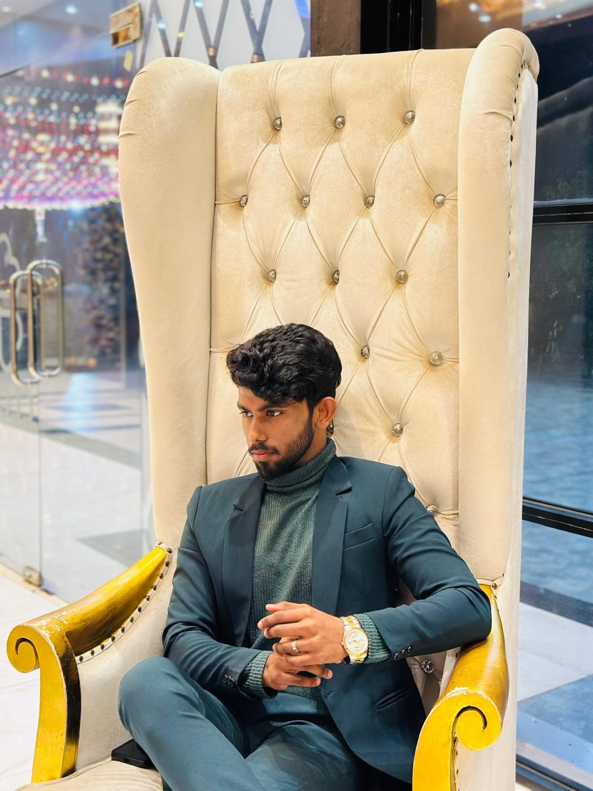

Final Year Project
Sri Lanka / Technology Portfolio
Hello, I'm
Volando
Fernando.
BSc (Hons) Information Technology
I turn ideas into digital solutions.
Working across web development, artificial intelligence, data and technology project coordination.
Web Developer|

Honours
University of West London
Featured Projects
The portfolio
Practical work,
clear outcomes.
Explore selected digital products, final year research, academic work and professional experience. Each page focuses on a different part of Volando Fernando's technology practice.
About Volando ↗